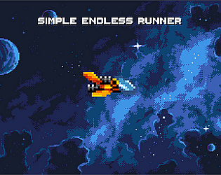
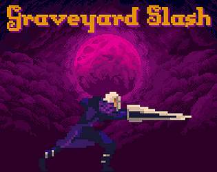

My name is Diogo Constantino

Greetings! I am a indie game developer and programmer, who loves making all types of games and trying to improve myself, all while helping my co-workers and the companies i work for.
I am skilled in programming, especially involving gameplay and mechanics since i love the knowing how everything works, and how to fix it.
If it involves programming i can solve it. I can use languages like: C#, C++, python, etc and using Unity, Unreal, Godot and more engines. I can figure out the how certain things work in a game, in terms of mechanics and such, and solve problems accordingly.
Here you will see the projects i have done, the experience, education and my socials, that I have. You can even play the games and look at the source codes of the projects on GitHub.

This is a project i made in Unity it's a 2D simple endless runner, where you are a spaceship and all you have to do
is dodge the red enemies spaceship and survive as long as possible while getting the highest score possible.
A very basic and simple game.

This project is a 2D platformer where you are a lone hero, out to kill as many monsters as possible.
All to get to the cave and complete the level, all while going through the tough terrain, different types of enemies and more.
It can be hard if you're not paying attention, but you can always restart at anytime.

Donec eget ex magna. Interdum et malesuada fames ac ante ipsum primis in faucibus. Pellentesque venenatis dolor imperdiet dolor mattis sagittis magna etiam.
Behind Simple Endless Runner

Here is where you can click the "What i did" button, that will take you to a PDF file of Simple Endless Runner,
there you will see what i did, the time it took for me to complete my game, the problems i faced and how i solved them.
A WARNING, this PDF is from my SharePoint page i had in college and it was the only way for me to get a copy,
so it is a bit messy and hard to understand and connect the images and text, but if you relly want to know my thought process behind the games i made,
you can have a look at it.

This is what i did to,,,,